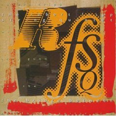
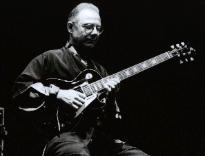
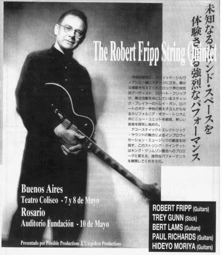
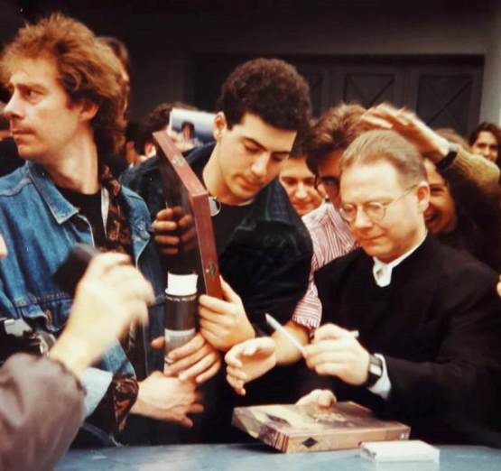

|

The bridge between
(El puente de en medio)
 Editado en 1993,
contiene grabaciones en vivo del mismo año (salvo el tema 5, grabado en estudio) de The
Robert Fripp String Quintet (El quinteto de cuerdas de Robert Fripp) en
Argentina (en su primera visita que hizo a ese país),
USA e Inglaterra. El quinteto, además de Fripp, estaba integrado por Trey Gunn y The
California Guitar Trio, cuatro ex miembros de The league of crafty guitarists, la liga de
"alumnos" de Fripp. Gunn ya había acompañado a Fripp en los discos
"Kneeling at
the shrine" (con el grupo Sunday all over the world) y "First day" (de Fripp-Sylvian), y
formaría parte del resurgimiento de KC en 1994. Este disco es una belleza; por supuesto
todos los temas son instrumentales; hermosas bases de guitarras acústicas acompañadas
por guitarra eléctrica y stick, piezas de J. S. Bach muy bien arregladas, y temas
"soundscapes" (el tema 7, Blue, y el último, que realmente hace sentir
las "almas en tormento").
Formación |
Temas |
| Robert Fripp: guitarra, frippertronics |
1 - Kan-non power (Poder Kan-non) (Moriya) 3'42 |
| Trey Gunn: stick |
2 - Yamanashi blues (Lams) 2'36 |
| |
3 - Hope (Esperanza) (Dehonestis/Sinks,
arr. de Gunn) 5'29 |
| The California Guitar Trio: |
4 - Chromatic fantasy (Fantasía cromática) (Bach, arr. de Gunn) 1'37 |
| Paul Richards: guitarra acústica |
5 - Contrapunctus (Contrapunto) (Bach, arr. de Lams) 2'16 |
| Hideyo Moriya: guitarra acústica |
6 - Bicycling to Afghanistan (Bicicleteando a Afganistán) (Golden)
3'18 |
| Bert Lams: guitarra acústica |
7 - Blue (Azul/Triste) (Fripp/Gunn) 5'26 |
| |
8 - Blockhead (Zopenco) (Richards) 3'17 |
| |
9 - Passacaglia (Pasacalle) (Bach, arr. de Lams) 6'52 |
| |
10 - Threnody for souls in torment (Tema fúnebre para almas en
tormento) (Fripp/Gunn) 12'45 |
En la cubierta del CD hay una excelente nota
de Fripp que aclara mucho sobre el título del álbum.


Arriba: afiche y programa de los recitales del quinteto en Argentina, mayo
de 1993. Abajo: RF firma boxsets a la salida del teatro en Buenos Aires.

|
 The quintet
The quintet